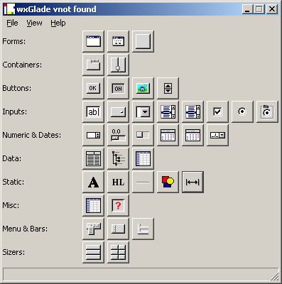
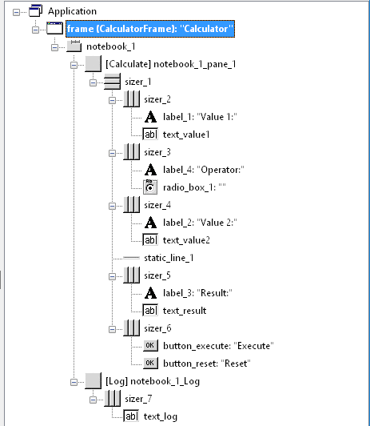
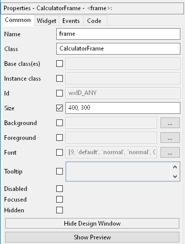
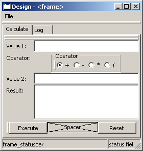

wxGlade Overview and Quick Start¶
Installing wxGlade¶
For some Linux flavors there are system packages for wxGlade.
Other than that, there is no real installation. Just download the latest released version as zip archive from https://sourceforge.net/projects/wxglade/files/wxglade/ or from the git release page at https://github.com/wxGlade/wxGlade/releases
Unpack the archive to a known location and maybe add it to the path.
If you are familiar with git, you may instead just clone the repository from https://github.com/wxGlade/wxGlade.git
The master branch should be stable enough for your work and I appreciate bug reports.
- Supported Python and wxPython Versions:
- The Classic wxPython versions 2.8 and 3.0 are supported as well as wxPython 4 Phoenix running under Python 3
- Phoenix plus Python 2 will probably also work, but this is not tested at all. wxPython 2.8 is generally less tested than the more recent versions.
- When running Python 3 + Phoenix or Python 2 + Classic, the generated Python code will not be compatible to the other version.
Other Prerequisites: On Windows, the win32 extensions should be installed: https://pypi.org/project/pywin32/ If they are available, wxGlade will register for .wxg files such that you can open them via double-click.
Running wxGlade¶
To start the program, change directory to the installation directory and enter python3 wxglade.py
or python wxglade.py in your shell or use whatever is required to start a python application on your platform.
You may want to add a desktop shortcut to run the wxGlade.py file (or the wxGlade.pyw file).
Note
For the best user experience, run wxGlade with your target wxPython revision (e.g. 2.8, 3.0, 4.0, 4.1).
If you use a different revision, the Design and Preview window might not look identical to your final program, as some styles are not supported under all revisions.
Note
If you want to build a GUI for wxPython Classic (<=3.0) or Phoenix (>=4.0): Start wxGlade in your target version - if it runs under Phoenix, it will create Phoenix code.
The .wxg file format is not affected by this.
So you may use a single .wxg file to generate code for both Classic and Phoenix.
The generated code should always run under both Python 2.7 and Python 3.
Accessibility¶
wxGlade attempts to be accessible not only via mouse and screen but also via keyboard and screen readers.
Keep in mind for your own applications that accessibility and usability go hand in hand. Keep your user intefaces simple and straightforward.
If you are using a screen reader like NVDA or JAWS:
Go to “Edit -> Preferences… -> Accessibility” to enable better compatibility.
If you observe problems, please provide feedback via the mailing list or the Github issue tracker.
Program Windows¶
wxGlade consists of three windows. The main window is split into three panels. The panels are separated by draggable sashes. Also, the “Windows” menu allows to re-arrange the sections by switching between three different layouts.
- (click on one of the images to see it full size; the screenshots are a bit out of date as previously
- Palette, Tree and Properties were three separate windows)
|  | Main window Palette panel: There is an icon for each window and control type that can be added to a project. |
|  | Main window Tree view control: This tree visualizes and allows editing the structure of the project with it’s application, windows, sizers and controls. On selection of an item, it’s properties will be shown in the Properties notebook. Press F2 to focus the Tree view control. |
|  | Main window Properties notebook: This lets you display and edit the properties of applications, windows and controls. To edit an item, select it in the Tree or Design window. Press F3 to focus the Properties notebook; see reference section for more shortcuts. |
|  | Design window: This one visualizes the design of the window. It is not 100% identical to the final window. To open this window, double-click a window’s icon in the Tree window. Press F6 to show the Design window. |
| Preview window A preview of the current window. It should look 100% identical to the window when it is used in the application. Press F5 for the Preview window. |
See also
Reference: Keyboard and Mouse Actions for keyboard shortcuts and mouse actions.
Examples¶
Before doing anything else, you may want to open an example file showing most of the supported controls:
- for wxPython 3.0 and Phoenix:
examples/AllWidgets/AllWidgets_30.wxg - for wxPython 2.8:
examples/AllWidgets/AllWidgets_28.wxg
Each example file includes a frame with most of the supported widgets and also a menu bar, a tool bar and a status bar.
- Required steps:
- open the file by dragging it to the main window or by selecting the menu item File->Open
- double-click “All_Widgets” in the Tree view to open the Design window and have a look around
- create Python source code:
- press
Ctrl-Gor - select the toplevel object “Application” and hit the button “Generate Source” in the Properties window
- press
- press
F5to create a preview
More examples:
There are additional examples in wxglade/examples showing how to use the CustomWidget to integrate some widgets that are not directly supported by wxGlade. The wxGlade design window will only display a placeholder for these.
dialog: create a dialog; show it on a button press or menu item selection; retrieve the resulthtml: usewx.html.HtmlWindowto display simple HTML pageshtml2: usewx.html2.WebViewto display HTML with Javascript and CSS (not available on wxPython 2.8)lib_plot: usewx.lib.plot.PlotCanvasfor plottingmatplotlib: use a Matplotlib canvas for plotting, quick and dirty versionmatplotlib2: use a Matplotlib canvas for plotting, better structuredmatplotlib3: full Matplotlib embedding exampleSpeedMeter: demonstratewx.lib.agw.speedmeter.SpeedMeterpy_shell: show how to embed a Python shellwx.py.shell.Shell
Some of these are explained in Custom Widget, some have Readme.txt files.

{kind=link}
{kind=link}
{kind=link}
{kind=link}